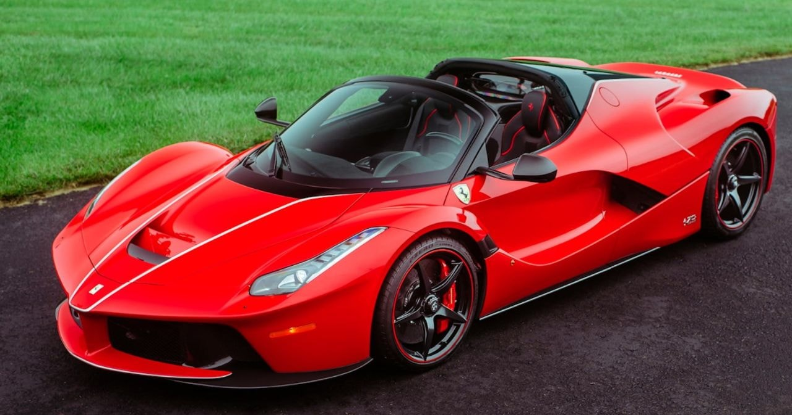
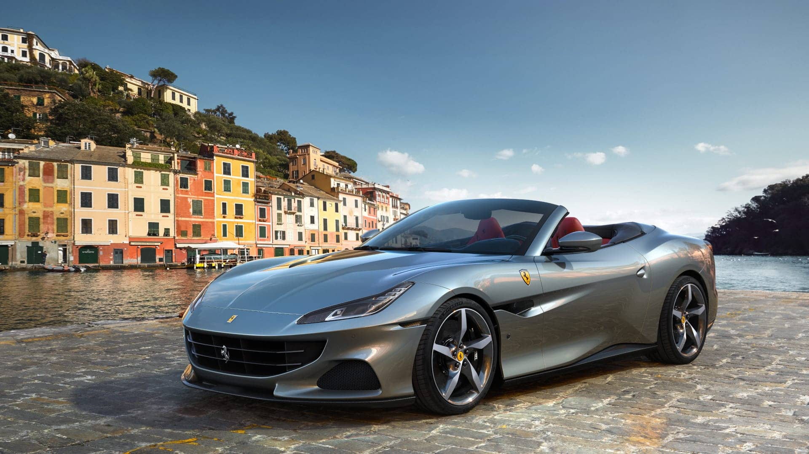
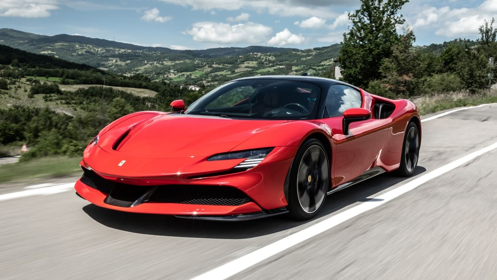
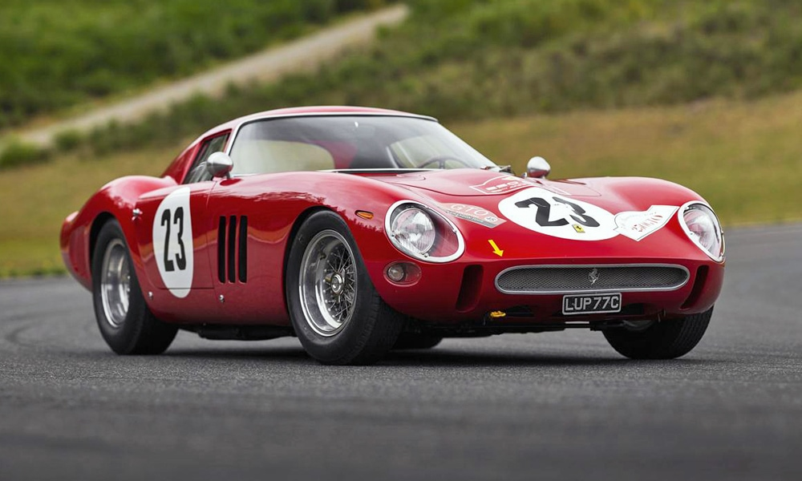
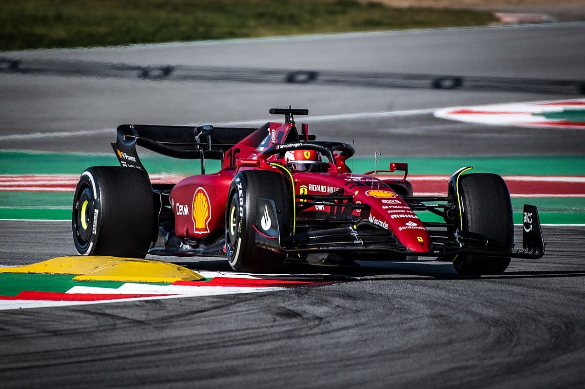
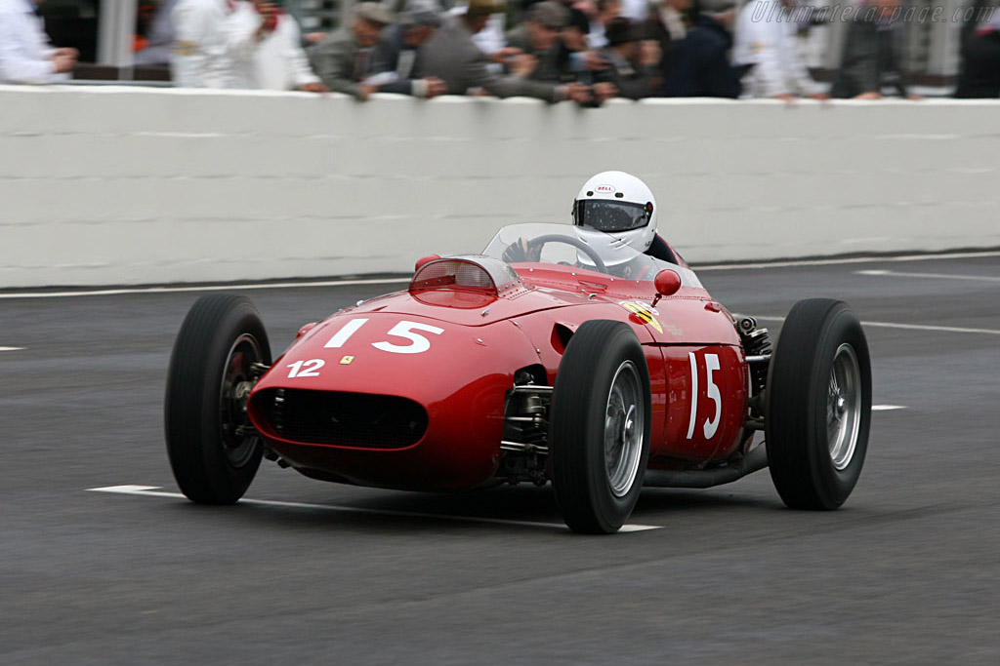

 Ferrari LaFerrari  Ferrari Portofino  Ferrari SF-90  Ferrari 250 GTO  Ferrari F1 2022.  Ferrari F1 1960.
Ferrari Formula Vaš preglednik ne podržava audio. Ferrari LaFerrari Vaš preglednik ne podržava audio. Ferrari LaFerrari Vaš preglednik ne podržava audio. Ferrari FXXK Vaš preglednik ne podržava audio.